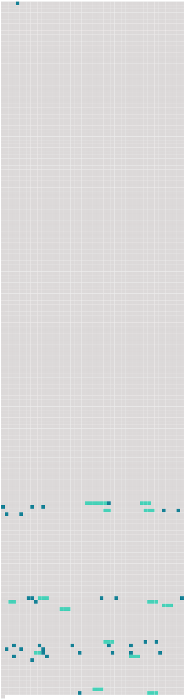

Longueur nb maillons : 48 mentions |
 |
Mlle de Hautefort, [Chémerault] et Saint-Louis, filles de la reine ; d’ Escars, sœur de Mlle de Hautefort, et Beaumont venoient avec moi. [167 phrases] Il avait fini par pénétrer jusque dans l’ intérieur d’ Anne d’ Autriche, en gagnant une de ses filles d’ honneur, cette jeune, [belle et spirituelle Mlle de Chémerault] [dont] La Rochefoucauld fait un si vif éloge. [Mlle de Chémerault] avait une correspondance mystérieuse avec le cardinal, où [elle] lui rendait compte de tout ce qu’ [elle] voyait et [entendait] Dans cette correspondance, trouvée après la mort de Richelieu parmi ses papiers et livrée à la publicité pendant la fronde, le roi et la reine sont appelés Céphale et Procris ; Mme de Hautefort y est toujours l’ Aurore, Mme de La Flotte est la Vieille, Mlle de La Fayette la Délaissée, Richelieu l’ Oracle, bien entendu, et [elle -même] se met sous le nom du bon Ange.
[Cet ange -là] , avec [sa] jolie figure, [sa] gaieté et [sa] candeur apparente, [trompa] longtemps Mme de Hautefort par des raffinemens de perfidie et de bassesse que la noble femme était incapable de soupçonner. [21 phrases] de Montignac, et sa sœur, Mlle l’ Escars, sans oublier [celle] [quelle] croyait [sa meilleure amie] , Mlle de Chémerault, que Richelieu avait aussi mise en disgrâce pour couvrir [sa] trahison, et [qui] , sous le masque du dévouement, avait accepté l’ odieuse mission de surveiller l’ exilée comme [elle] avait fait [la favorite] Tel était, à [son] égard, l’ aveuglement de Mme de Hautefort, qu’ avant de quitter Paris, ayant appris que la reine s’ était bornée à donner 4, 000 écus à [Mlle de Chémerault] , sans aucune autre marque d’ attachement et d’ estime, elle se sentit blessée dans l’ opinion qu’ elle s’ était faite de la générosité de la reine, et lui écrivit une dernière fois pour lui rappeler, dans les termes les plus vifs, ce quelle devait à [Mlle de Chémerault] , oubliant sa propre infortune et le rang de celle à laquelle elle écrivait pour ne songer qu’ à [la jeune fille] [8 phrases] Ma douleur me feroit ici achever ma lettre, si le zèle que j’ ai pour votre gloire ne me défendoit de taire une chose qui la peut ternir, et de vous dissimuler l’ étonnement que chacun témoigne de l’ état où vous laissez [Mlle de Chémerault] On sait que vous connoissez aussi bien [son] cœur que [sa] misère, et on ne croit pas même que vous [lui] deviez faire acheter le bien qu’ [elle] peut recevoir de vous par une demande qui [lui] sortiroit de la bouche avec plus de peine que [sa] propre vie. Cependant on [lui] a commandé de se retirer avec 4, 000 écus, qu’ il faut qu’ [elle] emploie à payer [ses] dettes : on parle de [la] renvoyer de la même sorte qu’ on renverroit Michelette, si l’ on s’ étoit avisé des grandes cabales qu’ elle fait dans la cour aussi bien que nous …… On dit que, si une reine n’ a pas d’ argent pour fournir aux nécessités d’ [une fille] [qu’] elle a aimée, elle peut bien au moins [lui] envoyer un présent qui témoigne qu’ elle ne [l’] oublie pas, et [lui] donner après cela une pension qui assure [sa] subsistance, avec une lettre qui fasse connoître à [sa] mère l’ entière satisfaction que vous avez d’ [elle] …… Je suis si délicate en ce qui regarde l’ opinion que toute la terre doit avoir de vous, que si [Mlle de Chémerault] n’ avoit pas su le présent que vous m’ avez fait, je n’ eusse pu m’ empêcher de le [lui] donner de votre part. [9 phrases]
Il n’ était pas dupe de la feinte amitié de [Mlle de Chémerault] , et plus d’ une fois il tenta d’ éclairer Mme de Hautefort ; mais celle -ci rejetait bien loin ses soupçons, « ne pouvant pas seulement, dit La Porte, souffrir la pensée d’ un tel crime, » et [elle] ne fut désabusée qu’ à la mort de Richelieu, lorsque la reine lui envoya les lettres de [Mlle de Chémerault] , trouvées dans la cassette du cardinal. |
 |
Il est possible de télécharger la ressource sur la page Ortolang |
Si vous avez des questions ou vous voyez des erreurs, merci d'envoyer un mail à silvia.federzoni89@gmail.com |